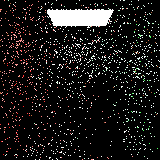
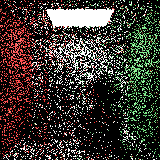
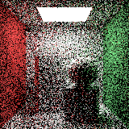
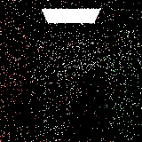
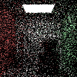
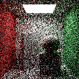
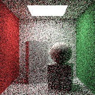
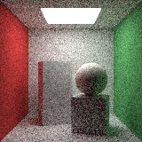
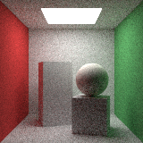

Integración Hemisférica de Monte Carlo en Coordenadas Esféricas (dω = sinθ dθ dφ) y Muestreo por Importancia Ponderado por Coseno
Esfera unitaria 100% reflectora difusa (ρ = 1.0, fr = 1/π) en un entorno isotrópico Li = 1.0. En equilibrio termodinámico, ∫Ω (1/π) cosθ sinθ dθ dφ = 1.000000. Con muestreo por coseno p(ω) = cosθ/π, el factor cosθ se cancela algebraicamente, produciendo varianza cero en 1 rebote.
| Muestras (N) | ⟨Lo⟩ Uniforme | Varianza Muestral Unif | Error |⟨Lo⟩ - 1| Unif | ⟨Lo⟩ Coseno | Varianza Muestral Coseno | Error |⟨Lo⟩ - 1| Coseno |
|---|---|---|---|---|---|---|
| 1 SPP | 1.002408 | 0.000000 | 0.500833 | 1.000000 | 0.000000 | 0.000000 |
| 4 SPP | 1.002122 | 0.334642 | 0.234041 | 1.000000 | 0.000000 | 0.000000 |
| 16 SPP | 0.999672 | 0.334385 | 0.115287 | 1.000000 | 0.000000 | 0.000000 |
| 64 SPP | 0.999933 | 0.333794 | 0.058146 | 1.000000 | 0.000000 | 0.000000 |
| 256 SPP | 0.999705 | 0.333392 | 0.028862 | 1.000000 | 0.000000 | 0.000000 |
| 1024 SPP | 1.000049 | 0.333248 | 0.014336 | 1.000000 | 0.000000 | 0.000000 |
Comparación cuantitativa entre Muestreo Hemisférico Uniforme p(ω) = 1/(2π) y Muestreo Ponderado por Coseno p(ω) = cosθ/π frente a la imagen de referencia calculada con N = 4096 SPP.
| SPP (N = 2k) | MSE Uniforme | MSE Coseno | RMSE Coseno O(1/√N) | Var(⟨Lo⟩) Uniforme | Var(⟨Lo⟩) Coseno | Reducción de Varianza | Tiempo Coseno (ms) |
|---|---|---|---|---|---|---|---|
| 1 SPP | 1.310674 | 0.828331 | 0.910127 | 1.310674 | 0.828331 | 1.58x menor varianza | 4.6 ms |
| 4 SPP | 0.325823 | 0.205609 | 0.453442 | 0.320514 | 0.207909 | 1.54x menor varianza | 13.8 ms |
| 16 SPP | 0.085338 | 0.052867 | 0.229928 | 0.084319 | 0.052683 | 1.60x menor varianza | 43.5 ms |
| 64 SPP | 0.021515 | 0.013219 | 0.114975 | 0.021147 | 0.013021 | 1.62x menor varianza | 156.0 ms |
| 256 SPP | 0.005445 | 0.003490 | 0.059077 | 0.005278 | 0.003249 | 1.62x menor varianza | 606.0 ms |
| 1024 SPP | 0.001539 | 0.001019 | 0.031923 | 0.001319 | 0.000812 | 1.62x menor varianza | 2428.8 ms |

N = 1 SPP
N = 4 SPP
N = 16 SPP
N = 1 SPP
N = 4 SPP
N = 16 SPP
N = 64 SPP
N = 256 SPP
N = 1024 SPP